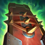
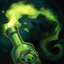
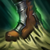
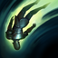

|  |
Noxious Slipstream |
Passive |
When Singed passes within 225 range of a champion, he drifts off of them, gaining 20% bonus movement speed for 2 seconds. This effect has a champion-unique 10 second cooldown. |
|  |
Poison Trail |
Q |
Toggle: Singed leaves a poison cloud behind him for 3.25 seconds. Enemies standing in the cloud's trail are poisoned for 2 seconds, taking 5 / 7.5 / 10 / 12.5 / 15 (+10% of ability power) magic damage every 0.25 seconds for the duration (continually refreshes while remaining in the affected area), for a total of 40 / 60 / 80 / 100 / 120 (+80% of ability power) magic damage over 2 seconds. |
|  |
Mega Adhesive |
W |
Singed covers the target area with a potent adhesive for 3 seconds, slowing by 40% and grounding all enemies within. |
|  |
Fling |
E |
Singed flings an enemy over his shoulder (500 units), dealing 50 / 65 / 80 / 95 / 110 (+75% of ability power) (+ 4 / 5 / 6 / 7 / 8% of target's maximum health) as magic damage. If the flung enemy lands into Mega Adhesive Zone, they will be snared for 1 / 1.25 / 1.5 / 1.75 / 2 seconds. |
 |
Insanity Potion |
R |
Singed drinks a potent brew of chemicals, granting him 30 / 55 / 80 ability power, armor, magic resistance, movement speed, health regeneration per 5, and mana regeneration per 5 for 25 seconds. |